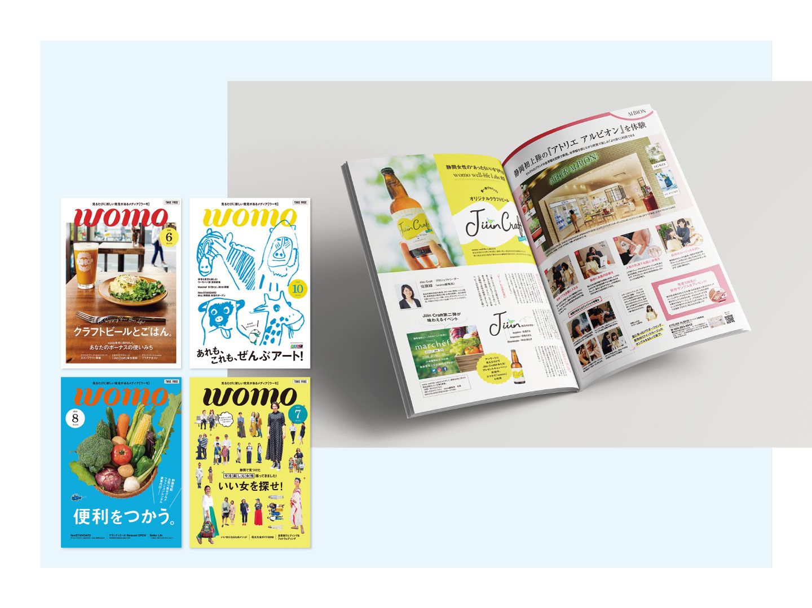

【実務実績】地元情報誌「womo」

地元のオススメコンテンツを発信する。自社出版フリーマガジン「womo」（月刊／発行部数8万部／ページ数50程／配布エリア静岡市内）。W210mm × H297mm（A4サイズ）。地元企業やお店などの広告を掲載。
株式会社しずおかオンライン／womo／2018.5.24-2018.9.27（静岡版Vol.211-213,215）
目的
発行部数の増加／広告受注
ターゲット
20〜30歳／女性
デザインコンセプト
前任者から担当を引き継いだ時点で、地域に浸透した存在として確立した知名度があったため、往来の女性らしいデザインは残しつつ、飽きられない新しいデザインを取り入れるよう務める。また、静岡県民はモノトーンカラーを好む傾向があるため、紙面でも新鮮さの中に品のある色使いを心がけた。
担当
デザイン／入稿管理
期間
| 取材・原稿作成 | ：2〜3週間（▲） |
|---|---|
| 台割 | ：1日（▲） |
| デザイン（10〜20件を2〜3校） | ：15〜30時間 |
| 確認／入稿（1回目） | ：1日 |
| 修正／入稿（2回目） | ：1日 |
▲＝担当してない部分。
成果・工夫
- 制作から入稿までの一連のフローを構築し、チェック項目をリスト化することで、安定的に全体の制作進行を管理。